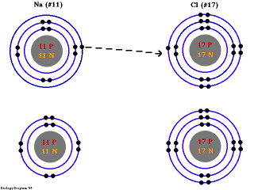

#12469 1 2006-11-26T05:07:22Z Keron Cyst Best. Bond movie. Ever. I think it went overboard with the romance, but still was the greatest Bond movie I've ever seen. The beginning parkour was insane especially, and the surprise ending. MAN, that was twisted
No wacky gadgets, eitherBond just uses a laptop and cell phone here, generic stuff! (Although it is admittedly a remake of the first Bond movie, where he initially becomes an agent)
#259805 2 2006-11-26T05:11:34Z Blazeraid There was no Q or Money Penny. No awesome gadgets, no cool cars (Or not as many as there should be), and, more importantly, no Q. T'was a good James Bond movie, I dare say it was better then the recent one with Halle Berry, and the parkour was amazingly done.
#259813 3 2006-11-26T05:35:23Z Bigblargh I haven't seen the movie. But I already know I won't like it. Bond films must include:
Guns
Gadgets
Cars
Girls
If any are missing, I'll be pissy.
#259822 4 2006-11-26T06:10:03Z McP3000 I agree with Monkeyfeces and then add the part where it says "guy with jet black hair"
#259835 5 2006-11-26T07:36:01Z George Damn! Movies in Australia suck! We don't get Casino Royale until December 7th

#259841 6 2006-11-26T08:10:39Z Mr_Mongoose Damn! Movies in Australia suck! We don't get Casino Royale until December 7th
We get the
Wii on the 7th, too.
#259881 7 2006-11-26T10:29:34Z Floorhugger I am hoping to see it today, but unlikely. Daniel Craig doesn't have completely blond hair, it's more a browny colour than blond.
#259952 8 2006-11-26T16:14:35Z Keron Cyst You are repulsed by the color of his hair?!?!
@Bigblargh: only gadgets are missing (not even, wholly, if you consider a bit more conventional electronics as still gadgets). And a movie's lame if it has to be carried through with 'em; the others were getting boring, but this one was ingenious.
#259957 9 2006-11-26T16:26:09Z Spawn of Yanni i didnt expect to like casino royale, being what u mite call a 'traditional' 007 fan, but it turned out really good
thing is, hows daniel craig gonna be in his next movies - this one was completely different, but the excuse for that was that it was wen 007 BECAME an agent, thus no q, moneypenny, gadgets etc.
are they gonna continue that for his next movies?
#259958 10 2006-11-26T16:30:07Z AMomentLikeThis Best. Bond movie. Ever. I think it went overboard with the romance, but still was the greatest Bond movie I've ever seen. The beginning parkour was insane especially, and the surprise ending. MAN, that was twisted
I agree. Although the ending wasn't really that much of a suprise, it was kinda obvious what was going to happen.
I don't see why people are making a fuss about his hair, you can hardly tell he has different hair during the movie anyway.
But yes, definantly one of the best, invisible cars etc.. had just taken it overboard.
#259989 11 2006-11-26T18:36:40Z Topolord I liked the bit at the beginning where the guy gets up off the floor, and Bond turns and it fits into the thing with the view inside the barrel of the gun. it made me laugh. But the movie was also much more violent. all that strangling! I suppose that's more realistic though.
#260013 12 2006-11-26T20:41:10Z SlappyMcGee Although it is admittedly a remake of the first Bond movie, where he initially becomes an agent
Incorrect, good sir.
The first bond movie is Dr. No. This is an adaptation of the first Bond
novel, by Ian Fleming.
Fantastic movie.
#260016 13 2006-11-26T20:44:19Z Twistkill It sounds great. My dad loves action movies and he wants to see it.
... when it comes out on DVD.

#260028 14 2006-11-26T21:30:50Z Keron Cyst ... The first bond movie is Dr. No. This is an adaptation of the first Bond novel, by Ian Fleming....
Gah, I knew it was one or the other.
Poor Twistkill

That just sucks.
#260191 15 2006-11-27T02:12:31Z Guest This one of the few new movies I haven't seen yet.
#260297 16 2006-11-27T04:19:08Z Yahoozy Gah! I've been waiting for this thing to come out forever, and I still haven't seen it!
This thread makes me want to see it even more. Argh!
Edit: Actually, the original was a funny parody. Nothing like the rest of them.
#261549 17 2006-11-29T14:42:00Z Britannia I admit, the newer films since 1980 on have had stupidly OTT gadgets.
And on watching the trailer, it looked good. Until that is, he ruins the DBS.
Whole reason I am not going. To see a beautiful DBS smashed to bits.
Plus, 007 films aren't quite my thing.
#261553 18 2006-11-29T14:49:54Z AMomentLikeThis Whole reason I am not going. To see a beautiful DBS smashed to bits.
Why do I get the impression that you're not kidding?
#261555 19 2006-11-29T14:52:30Z Britannia You are correct. I am not kidding.
It's a hand built Aston, much like my one on NFS. I'd hate to see it smashed up...
As you note, I love cars. Cars are my favorite thing in the world, second only to girls people.
#261560 20 2006-11-29T15:01:29Z astro That's the stupidest thing I've heard since whatever you posted last.
#261562 21 2006-11-29T15:05:05Z Britannia It's my opinion... For all the graphics they use in films today, you'd thought they'd save a beautiful AM from being scrap. Idiots.
EDIT: I'm posting far to often today. I'll stop, and go on IRC instead.
#261787 22 2006-11-29T23:31:59Z Keron Cyst The Aston Martin is Brosnan's favorite car; he owns one himself. Think of how devastated
he would be, especially having just finished his career in 007
#262028 23 2006-11-30T11:39:27Z Trogdor007 It was a good movie, but as far as being true to the books, AGH! They were supposed to play Baccarat and (I think it's)Semin de fer. Why would all these important world class gamblers play Texas Hold 'em for God's sake!?!?! I liked the "I'm the money. Every penny of it." but I'm dissapointed with what they are doing here. With the release of the James Bond movie "Casino Royale" they have called "Die Another Day" the last of it's kind, and that series is over. They're restarting it all, taking place now, without Bernard Lee, Desmond Llwelyn, or Moneypenny (Whichever one you fancy). This bugs me. I'd rather they had it off book, untrue in every way, without Judi Dench, and making the entire plot take place in the late 50's then now, cancelling out all precedents.
Oh, and the opening credit sequence was incredible. As was the Parkour, which I was pleased to see that the man who played Mollaka was the same man who helped invent Parkour in the first place.
And I didn't mind the blonde.
#262044 24 2006-11-30T13:13:39Z sweep I've always found the dull, generic repetitive style of the Bond series particularly annoying - it seemed to be getting stuck in a horrible rut. The last movie had an invisible car in it. WTF? There's a difference between gadgets and stuff that just shouldn't happen in anything that isn't a cartoon.
But, as it turns out, Daniel Craig has breathed life into the series. The character of Bond is more interesting, and I found Casino Royale to be really rather good. He is a brilliant Bond.
#262048 25 2006-11-30T13:25:18Z Spawn of Yanni yeah it was great....did u guys know that the theme song was done by chris cornell, lead singer of audioslave? i was thinking to myself it was a good song, now i know why. (if you already knew this, feel free to make me feel like an idiot)
one thing though: arent there extensive tests done on cars to ensure that even at its top speed, it wont tip over when you turn, like it did in the movie? hmm. i guess you could say its a Bond car, they dont apply to the rules.
#262830 26 2006-12-01T22:56:54Z Trogdor007 When you're going 140 or above, those rules don't apply. Plus it's a foreign expensive car- why let insurance go to waste?
#263933 27 2006-12-03T21:16:32Z Floorhugger i saw it on friday. Best Bond movie ever!
I must admit to having tears in my eyes when thery smashed up the DBS

such a beautiful car.
#263959 28 2006-12-03T22:09:43Z Hendor I was looking forward to a big car chase as soon as I saw the Aston Martin. When he got into it and started tearing after his girl, I sat up and got ready for a good chase. But nope, crash, bang, boom its over.
Oh well, it was definitly my favorite bond yet, and i've seen most.
#263967 29 2006-12-03T22:22:17Z Cowgomoo Great film, saw it a while ago
There are about 3 bits where you think it will end and it goes on though... they could have cut out 15 minutes and it would still have been as good
#263969 30 2006-12-03T22:23:33Z Twistkill *spoilers*
Thanks a lot for spoiling it for us who haven't seen it...
#264165 31 2006-12-04T02:54:09Z Aju Although I didn't find it to be the best bond ever I still found it darn awesome. The action scenes were done extraordinarily, and the poker scenes really captured the tension that real poker games are. Definitely one of the better Bonds out there.
#264334 32 2006-12-04T08:28:16Z Winjet I dunno. I didn't get it. Had trouble following it. No nudity. Shame.
#264374 33 2006-12-04T14:26:40Z Spawn of Yanni I dunno. I didn't get it. Had trouble following it. No nudity. Shame.
its bond, there never is...
#264377 34 2006-12-04T14:32:48Z astro Are you kidding?
#264378 35 2006-12-04T14:42:40Z blue_tetris BEST BOND EVER

#264384 36 2006-12-04T15:04:19Z stepself BEST BOND EVER
Table salt? That's so pedestrian. I think the best bond is the kind you find in aromatic rings. Delocalized pi-bonds. Very simple, very stable.

#264388 37 2006-12-04T15:22:38Z blue_tetris BEST BOND EVER
Table salt? That's so pedestrian. I think the best bond is the kind you find in aromatic rings. Delocalized pi-bonds. Very simple, very stable.
BONDZINE RINGS
#264399 38 2006-12-04T17:13:34Z sweep I dunno. I didn't get it. Had trouble following it. No nudity. Shame.
If you had trouble following it, I'd suggest you watch something instead along the lines of... I dunno, Happy Feet?
As a bonus, penguins don't wear clothes.
#264441 39 2006-12-04T19:08:44Z McP3000 ZOMG NAKED PENGUINS FTW!!!!
#264472 40 2006-12-04T19:55:27Z blue_tetris I dunno. I didn't get it. Had trouble following it. No nudity. Shame.
You had trouble following an
action movie? May I recommend... hmmm... honestly, there's nothing I can recommend that's easier viewing than a Bond flick. And Casino Royale turned out to be a classic Bond flick. Wet PG-13 women. Daniel Craig's ass. Outrageously sexy car. Crazy parkour scene. Sweet gunplay. Explosions.
There were two reasons why this movie was so easy for me to follow. Wanna know what those two reasons were?
Testicles.
#264591 41 2006-12-04T23:18:24Z Limer man, i hate this film. the plot is way too thin. the chase at the beggining is stupidly impossible, bond looks like a security guard. the girl is possitivly scitsafrenic, that guy crys blood (how corny is that?!?)
i could go on
#264791 42 2006-12-05T06:14:43Z 47 I am conflicted. One part of me says my favorite part is when, in the parkour scene, the dude with the bomb leaps through the hole in the wall and Bond RUNS THROUGH it, and when the dude throws his empty pistol at Bond and he frickin' CATCHES it and THROWS IT BACK at him.
I love this movie. Thought it centered a bit much on the poker though. Felt like I was watching ESPN for a second.
#264854 43 2006-12-05T12:56:15Z Spawn of Yanni man, i hate this film. the plot is way too thin. the chase at the beggining is stupidly impossible, bond looks like a security guard. the girl is possitivly scitsafrenic, that guy crys blood (how corny is that?!?)
i could go on
thats actually the most negative repsonse ive heard anyone say about this film, not just on the forum

#265001 44 2006-12-05T20:55:44Z Winjet He ran kinda funny, too.
#265071 45 2006-12-05T21:59:05Z blue_tetris man, i hate this film. the plot is way too thin. the chase at the beggining is stupidly impossible, bond looks like a security guard. the girl is possitivly scitsafrenic, that guy crys blood (how corny is that?!?)
i could go on
thats actually the most negative repsonse ive heard anyone say about this film, not just on the forum
And it was written so well. It's hard to disagree with him.
#265214 46 2006-12-06T01:29:59Z Tsukatu the dude throws his empty pistol at Bond and he frickin' CATCHES it and THROWS IT BACK at him.
That's
exactly the sort of unconventional action that entertains me the most.
You've just convinced me to see it on the big screen.
I was planning on waiting 'til it came out on DVD and then pirating it, but now I want to see it in theaters.
#265216 47 2006-12-06T01:32:51Z Guest I was hoping he would leap around a desk and throw a spear at some guy.
#265221 48 2006-12-06T01:44:54Z blue_tetris the dude throws his empty pistol at Bond and he frickin' CATCHES it and THROWS IT BACK at him.
That's exactly the sort of unconventional action that entertains me the most.
You've just convinced me to see it on the big screen.
I was planning on waiting 'til it came out on DVD and then pirating it, but now I want to see it in theaters.
It's most certainly the sort of movie that lacks a level of panache without the big screen to properly present it.
#265245 49 2006-12-06T02:25:07Z Winjet where was the film made, anyway?
#265592 50 2006-12-06T20:29:31Z Limer ^ almost definatly in america, the rest of the world has higher standards. (no offence, im just saying that only in america, film so bad cn be made. seriously though, you guys make so many bad films. but its not really your fault, you make so many, there has to be bad ones, but you make good ones as well. im rambling. ill stop now)
#265604 51 2006-12-06T20:54:35Z AMomentLikeThis Following what Limer said, it was mostly made in Pinewood, England.
#265606 52 2006-12-06T21:00:03Z epigone This was one of the best bond movies.
One major problem:
This is supposed to be a prequel to all of the other Bond movies, yet chronologically, it happens after. For instance, a reference to 9/11 is made and the technology is very advanced, back in Dr. No times there was no 9/11, there was the cold war, and they for sure didn't have defibrillator's in their cars.
I know Bond is supposed to be timeless, how could he be the same age (roughly) over 40 years of movies otherwise, but I would have enjoyed this movie more if they had tried a little to have it set in the early 60's.
#265622 53 2006-12-06T21:42:56Z Tsukatu ^ almost definatly in america, the rest of the world has higher standards. (no offence, im just saying that only in america, film so bad cn be made. seriously though, you guys make so many bad films. but its not really your fault, you make so many, there has to be bad ones, but you make good ones as well. im rambling. ill stop now)
This comment was most definitely made by a complete idiot.
No offense or anything, Limer. No offense.
AMLT:

#265721 54 2006-12-07T00:00:22Z Keron Cyst No, no. You know whose action movies suck? Japan.

#265736 55 2006-12-07T00:14:08Z Topolord This was one of the best bond movies.
One major problem:
This is supposed to be a prequel to all of the other Bond movies, yet chronologically, it happens after. For instance, a reference to 9/11 is made and the technology is very advanced, back in Dr. No times there was no 9/11, there was the cold war, and they for sure didn't have defibrillator's in their cars.
I know Bond is supposed to be timeless, how could he be the same age (roughly) over 40 years of movies otherwise, but I would have enjoyed this movie more if they had tried a little to have it set in the early 60's.
yeah, I thought that was kinda strange. It was sort of a modern rendition of a prequel that takes place after it's sequels.
btw, your signature is so long it allows you to fit an extra couple words in every post.

#265737 56 2006-12-07T00:14:31Z Winjet Following what Limer said, it was mostly made in Pinewood, England.
Do you realize you just dissed your own country in reference to what Limer said?
[QUOTE=Keron] No, no. You know whose action movies suck? Japan.
[QUOTE]ouch. wonder if Daddaluma will ever see that.

*goes off to PM him*
@Limer: if everyone says this is the best Bond movie ever (and critics say so too), then shut up and agree with everyone or leave. Unless you're gonna start ranting on about how bad the other Bond movies are (I've never seen em).
#265746 57 2006-12-07T00:27:12Z Twistkill @Limer: if everyone says this is the best Bond movie ever (and critics say so too), then shut up and agree with everyone or leave. Unless you're gonna start ranting on about how bad the other Bond movies are (I've never seen em).
Hey, now. He doesn't
have to agree with everyone else, he is entitled to his opinion, but he does have to provide reasons why he doesn't like it. There's a difference between opinions and ineptitude:
Good opinion: I disliked the movie. The plot seemed kind of run-of-the-mill, the action was pretty mild, and the overall sound effects were sub-par.
Blatancy: This movie sucked. It was just bad. Plot sucked, action sucked, everything was just bad.
Limer's first post was a mix of the 2, but this:
^ almost definatly in america, the rest of the world has higher standards. (no offence, im just saying that only in america, film so bad cn be made. seriously though, you guys make so many bad films. but its not really your fault, you make so many, there has to be bad ones, but you make good ones as well. im rambling. ill stop now)
Is just being close-minded.
#265762 58 2006-12-07T01:12:10Z Keron Cyst #265769 59 2006-12-07T01:27:51Z McP3000 Please tickle me with the Japanese movie you found good. I've yet to see one.
#265784 60 2006-12-07T01:37:37Z Keron Cyst It's called The Returner, and has a cool storyline, with a hellish plot twist at the very end and amazing CGI. Find it at your local Blockbuster (they usually have it, I've seen).
#265792 61 2006-12-07T01:48:15Z McP3000 Is it dubbed?
#265815 62 2006-12-07T02:07:24Z Tsukatu Um... Keron, have you never seen Comet, Butterfly, and Sword?
#265912 63 2006-12-07T04:29:48Z Daddaluma ... ouch. wonder if Daddaluma will ever see that.
*goes off to PM him*
...
And if Dad' is in his right mind, he will agree with me! I've only seen ONE good Japanese action movie, literally (out of probably easily a dozen). All the rest... blech. The acting, not even the storyline is good. 
I am in my right mind, and I do agree with you.
The vast vast majority of Japanese movies (action or otherwise) suck giant donkey balls. Might as well throw in almost everything they show on television while we're at it too.
That said, there are a few really good Japanese movies out there, although I can't think of any good action movie off the top of my head.
Oh, and this Bond movie was great. For the people that still don't get how this is the first bond novel and is set in 2006, as has been said already, it's meant to restart the series. All they did was purloin the original storyline and modify it to fit in present day.
#265990 64 2006-12-07T11:47:22Z George Well, Casino Royale came out today for us Australians, so I'm going to watch it with a few friends on Sunday.
#266109 65 2006-12-07T20:30:25Z Limer My second post was out of order, but my desision still stands. Winjet, you are talking out of your ass. the whole point of threads like this is to "disscus the topic" not "praise the topic". sorry, what was that about leaving. i believe that counts as sucking up to people by saying what you think they are thinking instead of what you really think.
one thing i did like about the film, is the funny bit with the guy scratching bonds balls
#266112 66 2006-12-07T20:33:22Z McP3000 Oh, and this Bond movie was great. For the people that still don't get how this is the first bond novel and is set in 2006, as has been said already, it's meant to restart the series. All they did was purloin the original storyline and modify it to fit in present day.
I havent seen it yet, but i dunno...i think they should have just continued it, or maybe set it back in time. The movie sounds good, but is it really f*cking it up for the future?
#266250 67 2006-12-07T23:39:22Z Winjet ... ouch. wonder if Daddaluma will ever see that.
*goes off to PM him*
...
And if Dad' is in his right mind, he will agree with me! I've only seen ONE good Japanese action movie, literally (out of probably easily a dozen). All the rest... blech. The acting, not even the storyline is good.
I am in my right mind, and I do agree with you.
The vast vast majority of Japanese movies (action or otherwise) suck giant donkey balls. Might as well throw in almost everything they show on television while we're at it too.
That said, there are a few really good Japanese movies out there, although I can't think of any good action movie off the top of my head.
Oh, and this Bond movie was great. For the people that still don't get how this is the first bond novel and is set in 2006, as has been said already, it's meant to restart the series. All they did was purloin the original storyline and modify it to fit in present day.
donkey balls?
...
wow. I didn't even PM him.
#266365 68 2006-12-08T04:19:37Z Tsukatu Daddaluma is always present - he just hardly ever posts.